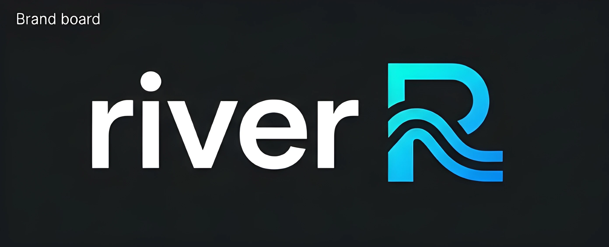
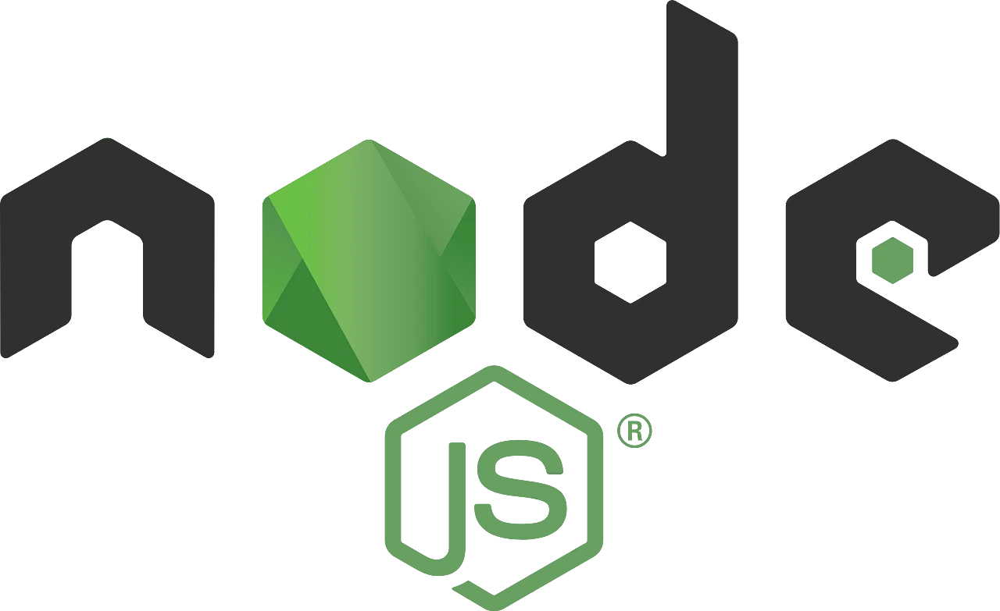

Systems Programming
Key-value storage, networked servers, and event-driven engines — with attention to concurrency, persistence, and failure modes.
RustTokioGo
Software Engineer · Builder · Open-Source Contributor
Software engineer building software, backend systems, and developer tools — from storage internals and APIs to full products.
Loading local portfolio banter…
Ejeh Oboyilo (Water) · SomeMoreWater · GitHub: @somemorewater
Software Engineer building backend systems and products.
I started building software before university, and I still learn the same way: by taking ideas from concept to working software. I work across backend services, storage and real-time systems, and full products — with attention to architecture, reliability, and how things behave beneath the surface.
I started writing software before university, after discovering web development in secondary school. That early start shaped how I learn: build real things, understand the underlying system, then make it better.
I study physics alongside engineering, but I came to software by building it. My work spans backend services, real-time platforms, storage systems, blockchain programs, and full products — from first sketch to working software.
I care about how software behaves beneath the surface — architecture, data flow, failure modes — and about shipping things that are reliable, maintainable, and actually useful.
Languages, databases, and infrastructure I've used to ship backend services, systems, on-chain programs, and products.
Key-value storage, networked servers, and event-driven engines — with attention to concurrency, persistence, and failure modes.
APIs with authentication, role-based access, queues, caching, docs, and clean REST design.
Relational data models, query design, in-memory storage, Redis-backed workflows, and persistence layers.
On-chain programs and user-facing products — PDA-based state and Devnet settlement alongside realtime, full-stack product delivery.

Storage internals
A lightweight key-value database inspired by Redis, built to explore networking, concurrency, and storage — with TTL expiration, sharded storage, and disk persistence.
Open case studyEducation platform
A study platform serving past exam questions alongside AI-generated practice — built around a backend that handles questions, users, and study flows.

Production backend API
A school management and CBT backend covering students, exams, results, and timed sessions — with auth and roles, background jobs, caching, and documented APIs.
I think in modules, boundaries, data flow, failure modes, and long-term maintainability.
I care about latency, resource usage, responsive UI, and systems that stay predictable under load.
I build for real workflows, not demos alone: useful defaults, clear APIs, and polished user paths.